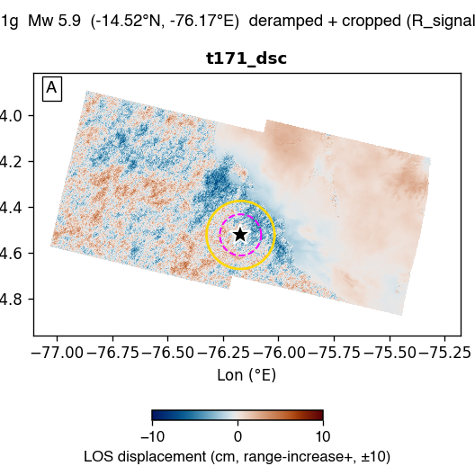

us7000il1g — Mw 5.9 — GBIS report
Event: 62 km SW of Santiago, Peru · (-14.522°N, -76.171°E, depth 14.0 km)
USGS NP1: strike 319.8° / dip 24.9° / rake 60.6°
USGS NP2: strike 171.7° / dip 68.5° / rake 102.9°
Status: ESCALATED at stage 5 — slipinv_timeout. Sections below show whatever the pipeline produced before it stopped; the rest are left blank. See §3 / escalation.md.
1. Raw observations (deramped + cropped)

2. Two-round iterative downsampling (Pass-1 zoned → Pass-2 synth-quadtree)
No subsample_v9_zoned.mat found — run Stage 4 (qsRunFullEvent) first.
3. GBIS inversion result — posterior + diagnostics
| parameter | posterior median | p16 .. p84 | prior bound | USGS NP1 |
|---|
| L (km) | 0.02 | 14.57 .. 15.28 | 4.40 .. 15.39 | — |
| W (km) | 0.01 | 10.01 .. 10.50 | 3.02 .. 10.57 | — |
| Z_top (km) | 0.00 | 0.53 .. 1.39 | 0.10 .. 14.00 | — |
| dip (°) | -33.2 | 30.8 .. 35.9 | 0.1 .. 59.9 | 24.9 |
| strike (°) | 128.3 | 304.3 .. 311.8 | 19.8 .. 259.8 | 319.8 |
| X (km) | -0.01 | -11.43 .. -9.90 | -15.00 .. 15.00 | — |
| Y (km) | 0.01 | 14.27 .. 14.92 | -15.00 .. 15.00 | — |
| SS (m) | +0.603 | -0.683 .. -0.529 | -2.000 .. +2.000 | — |
| DS (m) | -0.484 | +0.394 .. +0.586 | -2.000 .. +2.000 | — |
| |slip| (m) | 0.773 | | — |
| rake (°) | 141.3 | | 60.6 |
| Mw | 6.32 ± 0.04 | | 5.9 |
USGS-convention values shown (dip>0, strike, rake). Red row = posterior median within 2% of a prior bound (railed).
诊断结论: FAIL
acceptance 0.21 (target 0.20–0.45) · ESS 176 (≥500) · Geweke |z| 2.1 (≤2)
VR per track: t171_dsc 0.67 (≥0.50)
未通过项: ESS; stationarity (Geweke); param-at-bound: Y
4. Beachball comparison
⏳ Not generated — needs the full-mode figure helper. the beachball (full-mode figure helper).
5. Triplet — data / model / residual
⏳ Not generated — needs the full-mode figure helper. the data/model/residual triplet (full-mode figure helper).
6. Joint-posterior corner plot
⏳ Not generated — needs the full-mode figure helper. the corner plot (full-mode figure helper).
7. Burn-in / chain trace
⏳ Not generated — needs the full-mode figure helper. the chain trace (full-mode figure helper).